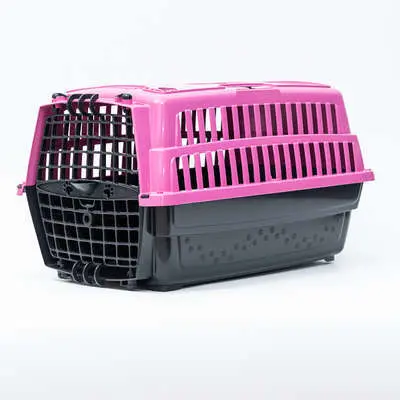

Caixa de Transporte
Detalhes do Produto
- Marca
- TransportSafe
- Material
- Plástico resistente com porta em metal
- Indicação
- Cães e gatos para viagens e consultas veterinárias
- Tamanhos
- N1 (até 5kg), N2 (até 10kg), N3 (até 15kg), N4 (até 25kg)
- Características
-
- Estrutura super resistente
- Ótima ventilação
- Porta com trava de segurança
- Alça confortável para transporte
- Aprovada para viagens aéreas
- Fácil de limpar
- Cores
- Azul, Rosa, Cinza
- Preço
- R$ 129,90
Descrição
Caixa de transporte resistente e segura para levar seu pet com conforto. Possui ampla ventilação, trava de segurança e alça reforçada. Ideal para viagens, consultas veterinárias e passeios. Aprovada pelas companhias aéreas.